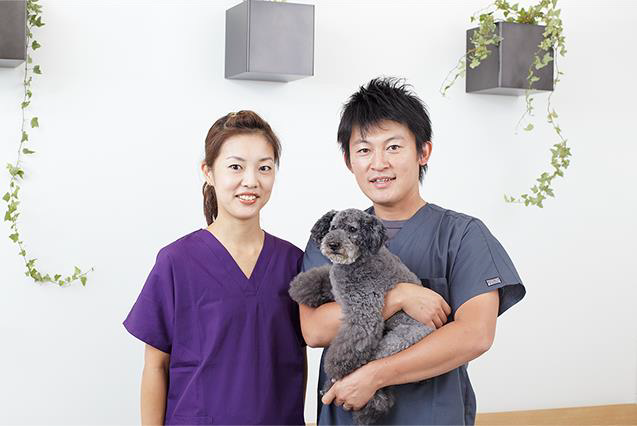

「歯医者がもっと行きたい場所になればいい」 そんなおもいで日々診療しています。

「歯医者さんは歯が痛くなってから行くところ」
「むし歯や歯周病は防ぐ事ができない・・・」
「歳をとれば歯が悪くなるのは当然。仕方ない」とお考えの方が多いのが現実です。
そんなイメージや間違った歯科治療への認識を変えたいと思っています。
そのために、竹屋町森歯科クリニックでは、予防治療に力を入れています。
そして、歯医者を皆さんの身近な存在にし、
「いきたい場所」になるよう日々診療しています。
昭和39年、京都府舞鶴市生まれ。
昭和63年、大阪歯科大学卒業 同年、大阪市中央区 「池田歯科診療所」勤務
平成4年、ＭＴＩ 京都インプラントセンター 勤務 平成7年、竹屋町森歯科クリニック開業です。
平成19年、患者、スタッフ、経営者にとって幸せな歯科医院づくりを目的としたMDE（メディカル＆デンタルエステ）協会を設立。 平成23年、歯科FOR YOUの会を設立し、永松茂久氏の提唱するFOR YOU精神を歯科で啓発。
現在はスタッフのモチベーションの高さが注目され、歯科に限らず、さまざまな業界向けに講演を行っている。また、医院のスタッフが講師として活動することも増えている。
著書に「指示待ちスタッフが変わる仕組み」（現代書林）、共著に、「行列のできる歯科医院3」（デンタルダイヤモンド社）、「ドクター育成カリキュラム」第一歯科出版）、「夢を叶える歯科医師たち」（第一歯科出版）「歯はみがい てけない」「やっぱり歯はみがい てけな実践編 」(講談社 講談社 +α新書 )などがある。 「歯科医療」、「月刊DHスタイル」、「舞鶴市民新聞」などに連載中。